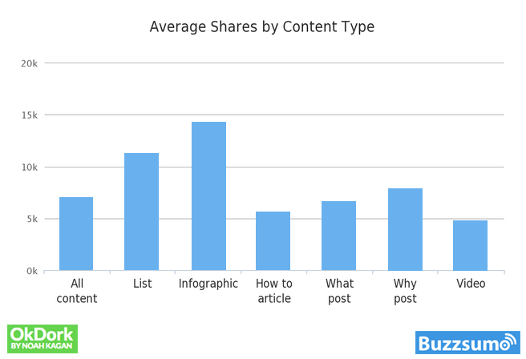

This post started out as a discourse against list posts. I was going to talk about how there are a million terrible list posts out there (which there are), but then I wondered — why are list posts so popular? As I began researching, I realized that I didn’t hate list posts, I just never realized the power of a good list post. A well-written list post can do wonders for your blog.
Checked your Facebook news feed lately? List posts. Everywhere. So what gives? Why are we so hip on reading enumerated things? Why is it that we would rather read a good ol’ “Ten Reasons Why You Can’t Lose Weight” post instead of a definitive guide on losing weight? I’ve found five reasons why I believe the list post reigns supreme in the blogosphere.
Let’s face it, we’re short on time and heavy on available information. List posts give us the ability to scan through a post, and still retain the major points without committing to reading the entire post. As I’ve written about before, we’re increasingly losing our ability to focus. This isn’t because we’re all like that dog off of Up — SQUIRREL — it’s just that our brains can only take on so much.
According to a recent study, the average human attention span dropped from 12 seconds in 2000 to 8 seconds in 2013. One second more than a goldfish! Yikes! So the list post is basically catering to the ever shortening attention spans of humanity. Thanks internet! A good list post doesn’t beg you to read everything. It invites you to, but gives you a hand if you’re “just passing through.”
It’s been a long day. The boss had you do a boat load of TPS reports, and you honestly don’t feel like making inferences with your brain. That’s when a list post shows up with a piping hot bowl of information, and feeds it to you with a spoon. Mmmmmmmmmmmm. Seriously, this is one of the best attributes of the list post. No thinking, just the big picture right there in front of you.
Another benefit of the list post as a guide is that it puts actionable sequences in order for us. It gives you a title like, “Build an Iron Man suit,” or “How To Write a Blog Post” and then it provides steps to take you from a pile of metal to an Iron Man suit. If only…
The list post provides a step by step application for our newly acquired knowledge. Eureka!
We’ve all been there. The misleading blog post. You waste a bunch of time reading to find the information that you’re looking for, but some cruel trickster (I just used the word trickster) has simply pulled you in with a clever headline. It’s just the worst. For the most part, list posts are straightforward with their intent. If the headline is good, it normally walks you through the door to list-post-information-land.
Occasionally you’ll run into an unhelpful list post that doesn’t stay on topic and bores you to death. But list posts are generally a “no frills” information source. Kind of like your grandma.
Since they’ve already laid out the steps for us, list posts make themselves easy to remember. The information is in order. If the post is really good, the author will use examples to reinforce each list item. These anecdotes help us to remember each item, and also give us context in how to apply the list.
List posts are often used as evidence to strengthen arguments. We tend to remember the portions of the posts that reinforce our points of view. Many a Facebook debate have been started over a shared list blog post because someone found a list item that tickled their fancy. After reading a list post, you’re ready to head out into the world with new information that could come in handy in your next debate over the color of that dress.
The author isn’t hoping that you’ll take the whole post with you (although that’d be great!). They only hope that one of the items in the list stand out to you enough for you to share it with others. Which leads me to my next point!
Other than infographics, list posts are the most likely content type to be shared by users; in this post by BuzzSumo, the authors talk more about the shareability of the list post. People are more confident that a shared list post will actually be read by their friends and followers than another form of content.
It’s possible that readers aren’t just sharing the content, but the scannability of the post. It’s informative and convenient. You may share a list post because you know someone who could greatly benefit from the content, but they’re insanely busy. You’re such a good friend!
The list post is one of the most popular forms of content on the web today. Whether you’re a gluten-free food warrior, or a doomsday prepper, there’s a list post for you out there! Much like the gas station breakfast burrito, the list post is often underwhelming. But occasionally you get ahold of one that is truly DELICIOUS. Oh yes, I went there.